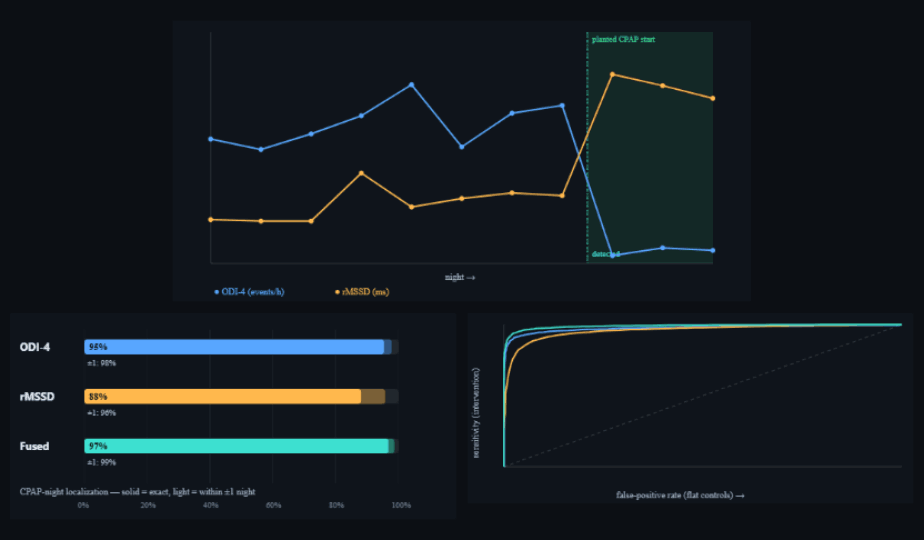

OxyDex · PulseDex nodes, Tepna physiological-signal suite
Background. When a sleep-apnea patient starts CPAP, their overnight physiology should step: respiratory events fall and autonomic tone recovers. If a multi-night wearable record can pinpoint when that step happened — and flag that it happened at all — the device becomes a passive therapy-response monitor. We test whether a vanilla change-point detector on the production metrics can do it. Methods. For intervention-arc synthetic patients with a planted CPAP-start night (restricted to ≥2 pre- and ≥2 post-treatment nights), we measured per-night ODI-4 (OxyDex) and rMSSD (PulseDex) with the real detectors. A single change-point (minimum within-segment SSE) localized the planted night for each metric and for a fused respiratory+autonomic index; the step-model R² gave a detection statistic, scored against flat-arc controls by ROC. Results. Across 2,981 intervention and 2,972 flat-control patients (records of ≥10 nights), change-point localization recovered the CPAP-start night with a median error of 0 nights and within ±1 night in 96–99% of patients. Fusing the respiratory and autonomic channels was best — exact 97%, within ±1 night 99%, detection AUC 0.99 — beating either channel alone (ODI-4 AUC 0.97, rMSSD 0.96). Conclusion. A treatment response that produces a clean physiological step is recoverable and well-localized by a simple detector, and the two single-signal channels carry partly independent evidence that fusion exploits. This is synthetic ground truth with a known, fairly clean step: it certifies the pipeline and method, not real-world CPAP-response detection, which is noisier, adherence-dependent, and confounded.
Keywords: change-point detection · CPAP · treatment response · obstructive sleep apnea · oximetry · heart-rate variability · sensor fusion · longitudinal monitoring
When someone with sleep apnea starts CPAP therapy, their body changes overnight: breathing interruptions drop and the heart's “rest-and-recover” signal improves. If a wearable worn across several nights could spot which night therapy started — and confirm it started at all — it would act as a passive check that the treatment is working.
We tested this on simulated patients where we planted a known “therapy-start” night, then used the real app's two detectors (a breathing one and a heart-rhythm one) to measure each night. A standard “where did the trend change?” method found the right night almost exactly — typically the correct night, nearly always within one night — and combining the breathing and heart signals worked best of all. One honest caveat we quantified: the method can “find” a fake change even in steady patients, so it must always be compared against people who didn't change. Because the step is clean and known here, this proves the method and software work; real CPAP responses are messier, so it isn't yet a claim about real patients.
Adherence and response to CPAP are usually assessed from the device's own residual-event log, not from the patient's broader physiology. Yet the response is physiologically broad: starting effective therapy lowers the apnea burden (fewer desaturations, lower ODI) and, over the same nights, relieves the autonomic stress of repeated arousals (higher short-term heart-rate variability). A wearable that records several nights spanning the therapy start therefore contains a step in two partly-independent channels — a respiratory one and an autonomic one. The analytic question is a textbook one: given a short, noisy multi-night series, can a change-point detector (i) decide that a step occurred and (ii) localize which night it occurred on? We answer it on synthetic patients where the change-point is planted and known, using the production single-signal detectors to produce the trajectories.
Intervention-arc patients in the 1–12-night longitudinal lane carry a planted CPAP-start night (profile.interventionNight, the 0-based index of the first treated night). On and after that night the generator drops the apnea–hypopnea index sharply and lets rMSSD recover, so ODI-4 steps down and rMSSD steps up at the same boundary. We restricted the analysis to arcs with at least two pre- and two post-treatment nights (and, in this run, to records of at least 10 nights), so a single change-point is in principle recoverable. Flat-arc patients (a stable latent, no step) are the detection null. Per-metric attrition came only from per-night node missingness: a patient was used for a metric only if every night carried a valid value (no interpolation across gaps).
Each night was scored by the unmodified production detector, loaded alone in its own Web-Worker realm (OxyDex and PulseDex collide on bare globals, so each runs in a separate worker pool and the two per-night trajectories are joined by seed): ODI-4 from oxydex-dsp.js → processNight and time-domain rMSSD from pulsedex-dsp.js. Timestamps follow the suite Clock Contract so night ordering is viewer-timezone-independent.
For a per-night series x₀…x₍ₘ₋₁₎ we fit a single change-point by minimizing total within-segment sum-of-squares, requiring at least two nights on each side:
where ĉ is the estimated first post-step night, matching the planted convention. We ran this on ODI-4, on rMSSD, and on a fused index — each series z-scored, ODI-4 sign-flipped (so both step the same direction), then averaged. Localization was scored against the planted night as exact match, within ±1 night, and median absolute error. As a detection statistic we used the step-model coefficient of determination R² = 1 − SSE_split/SSE_total, and computed the rank (Mann–Whitney) AUC of intervention vs flat-control R².
| Detector | Patients | Exact | Within ±1 | Median |err| (nights) | Detection AUC | tx median R² | flat median R² |
|---|---|---|---|---|---|---|---|
| ODI-4 (OxyDex) | 2981 | 95% | 98% | 0 | 0.97 | 0.92 | 0.28 |
| rMSSD (PulseDex) | 2981 | 88% | 96% | 0 | 0.96 | 0.78 | 0.25 |
| Fused (respiratory + autonomic) | 2981 | 97% | 99% | 0 | 0.99 | 0.91 | 0.27 |
Every detector localized the planted CPAP-start night with a median error of 0 nights. Even the single-channel detectors were within ±1 night in 96–98% of patients; the fused respiratory+autonomic index was best, recovering the exact night in 97% of patients and landing within ±1 night in 99%, with a detection AUC of 0.99. Because rMSSD and ODI-4 carry partly independent evidence of the same response, fusing them beat either alone on both localization and detection — a small but consistent gain.

treatment-response-analysis.html). Top: one intervention patient — ODI-4 (blue) collapses and rMSSD (amber) rises at the planted CPAP-start night (green band); the fused detector's estimate (teal dashed) coincides. Bottom-left: localization accuracy — solid = exact night, light = within ±1 night, for ODI-4 / rMSSD / fused. Bottom-right: detection ROC (intervention vs flat controls) by step-R²; all three curves hug the top-left, fused highest (AUC 0.99). Dark theme is the tool's native rendering.The detection statistic must be read against the null, not absolutely. Fitting a free single change-point to a flat control series still "explained" a median ~25–28% of its variance (R²≈0.25–0.28) purely by overfitting the best of many candidate splits to noise. Intervention patients sat far above this (median R²≈0.78–0.92), which is why detection separates so cleanly — but it also means a fixed R² cutoff read in isolation would over-call change in stable patients. The flat-control comparison (or an equivalent permutation/penalized threshold) is therefore not optional; it is what turns the inflated raw statistic into a usable decision.
When a treatment produces a genuine physiological step, recovering it is easy: a one-line change-point estimator localizes the CPAP-start night to the correct night (median error 0) and almost always within a single night, and detects the response with high AUC. The practical messages are three. First, autonomic recovery is as informative as the respiratory drop — rMSSD localized the start at least as well as ODI-4 here, so a device without oximetry is not blind to therapy response. Second, fusion helps: the two channels are not redundant, and combining them is the most accurate and most robust option. Third, the detection threshold must account for the null, because the best-split R² is inflated by the search over candidate change-points.
treatment-response-analysis.html → set patients/arm and minimum nights → "Run cohort". The example trajectory, accuracy bars, ROC, and Table 1 populate live. Export treatment-response-results.csv, treatment-response-stats.json, treatment-response-figures.png.oxydex-dsp.js (ODI-4 = processNight().odi4.rate) and pulsedex-dsp.js (rMSSD), each run in its own cohort-worker.js Web-Worker realm (two pools, joined by seed).cohort-gen.js + synth-gen.js; planted CPAP-start night = profile.interventionNight.Patients are independent, so the two arms can be grown to any size; accuracy estimates (exact %, within-±1 %, AUC) are proportions whose standard error scales as √(p(1−p)/N), and the detection AUC's SE falls as ~1/√N. The qualitative result — near-perfect localization, fusion best, null-inflated R² — is visible at small N; large N tightens the percentages and the ROC.
| Tier | Patients/arm | What it buys |
|---|---|---|
| Minimum (acceptable) | ~300 | Localization %s stable to ≈±3%, AUC to ≈±0.02; ordering (fused > ODI-4 > rMSSD) and the null-inflation point are already clear. Below ~100/arm the AUC and exact-% wobble. |
| Recommended | ~3,000 | Percentages to ≈±1%, AUC to the third decimal, clean ROC and accuracy bars. The run reported here. |
| This run | ~3,000 | 2,981 tx + 2,972 flat (≥10 nights). Sampling uncertainty ≈±1%. |
| Diminishing returns | > ~5,000 | Past here, extra patients barely move accuracies already pinned near their ceilings; what limits realism is the deliberately clean planted step, which more patients cannot make more realistic. |
Practical reading: ~300/arm is enough to see the effect, ~3,000/arm gives publication-quality precision, and beyond ~5,000/arm the gains are cosmetic — the binding limitation is the idealized synthetic step, not sample size.
CLAUDE.md (Clock Contract, evidence-grade system), COHORT-VALIDATION-BRIEF.md, CROSSNIGHT-ENVELOPE-SPEC.md, Tepna suite.